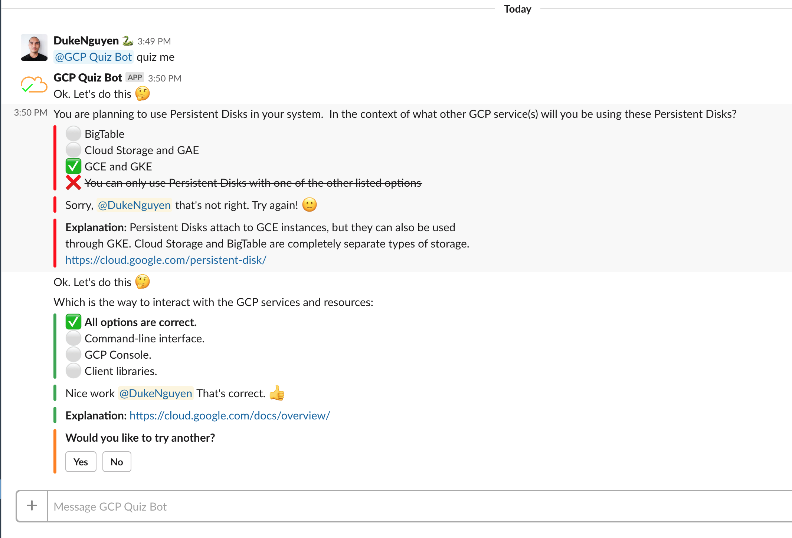

GCP Quiz Bot
1. Installation
Click on the button Add to Slack to add Gcloud Quiz Bot into your workspace..
To start a quiz, simply type: @gcp_quiz_me quiz me!
GCP Quiz Bot can be invited to a team's Slack channel, and then any individual can easily start a GCP learning session. To initiate the GCP Quiz Bot, simply type: @gcp_quiz_bot quiz me. The GCP Quiz Bot will respond with a question about a GCP service —and provide (4) possible answers. Participants in the team Slack channel can answer the question by simply selecting one of the possible answers. GCP Quiz Bot will respond to let everyone know who was the quickest to select the answer — and if their answer was correct! To keep playing (and learning), the participants just need to click yes when prompted if they'd like another question.
2. Screenshots
Screenshot 1: You can have a quiz on direct message.

Screenshot 2: You can have a quiz with everyone on a public channel.